Normal Wright workspace and actual isolated engineering run. No mocked routes or physical action.
Status: blocked
The updated package opens through the normal workspace.
Expected: Existing workspace navigation visible.
Actual: Normal Workflows and Files controls are available.
raw 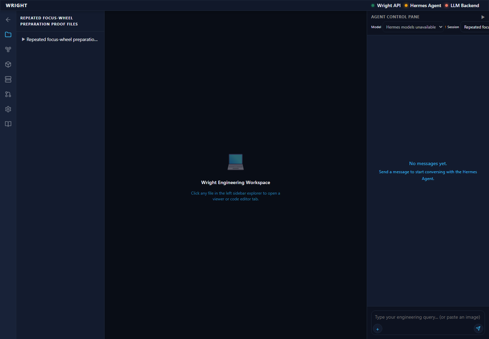
annotated 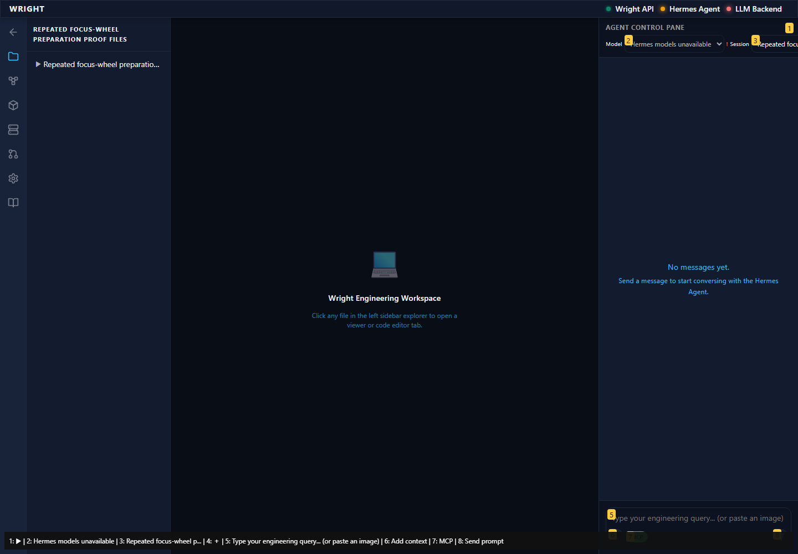
The same exact results render with the desktop file panel open.
Expected: Exact recorded results and docked navigation.
Actual: 20 exact result identities; docked file panel 260px wide.
raw 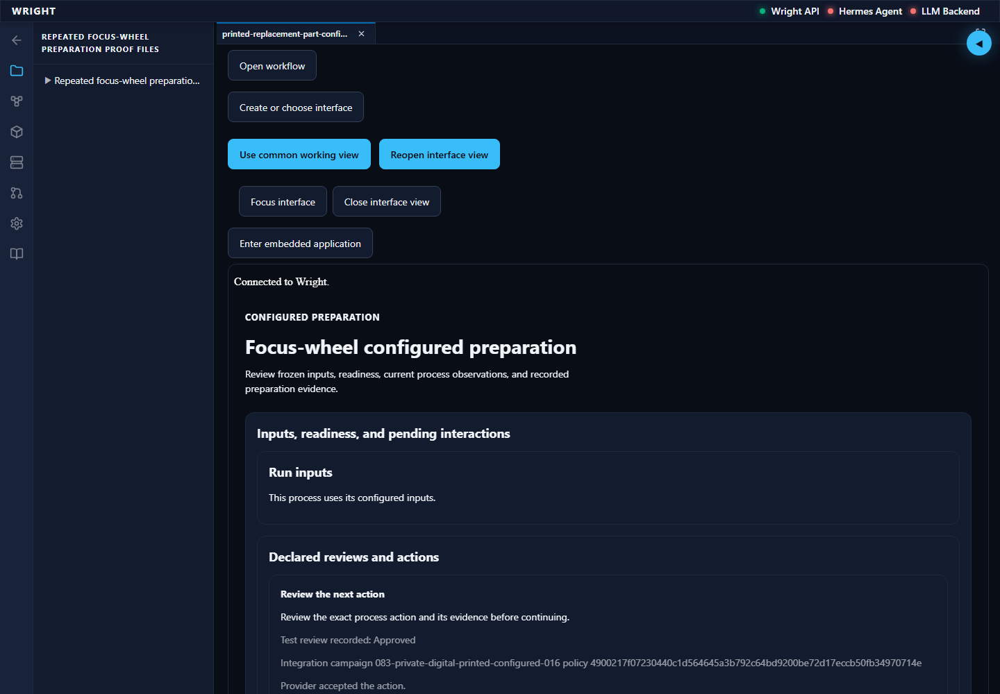
annotated 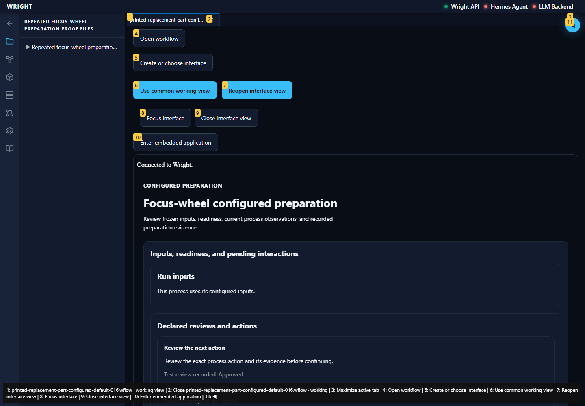
Navigation passes the scoped accessibility scan and Open workflow returns to the existing editor.
Expected: Zero scoped automated violations and existing editor available.
Actual: Navigation has zero WCAG A/AA violations; Diagram, Source and Use saved process remain available.
raw 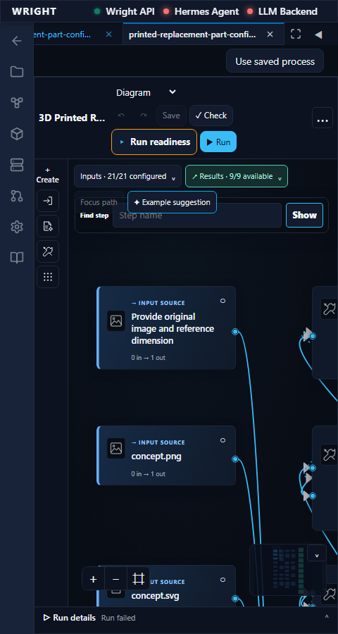
annotated 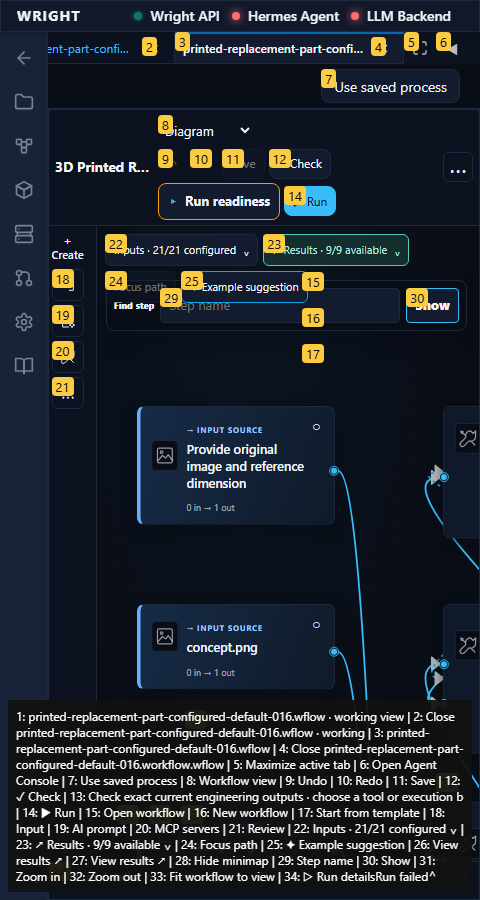
The common view shows the same exact engineering outputs at the available compact width.
Expected: Same exact recorded results; full available width and no outer overflow.
Actual: 20 exact common results; document 432px with 432px scroll width.
raw 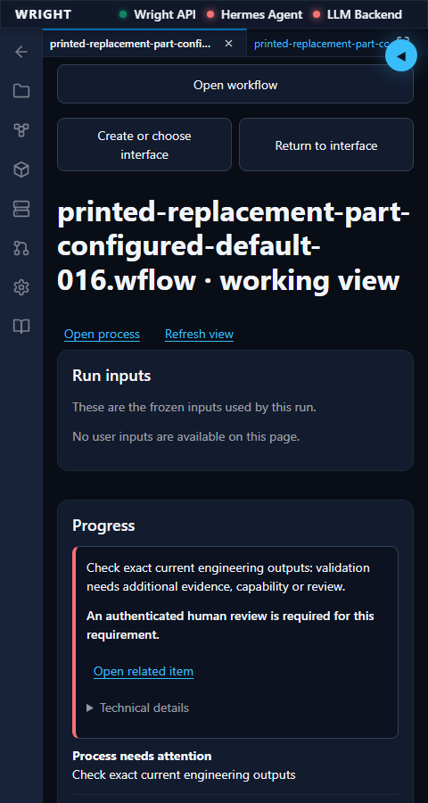
annotated 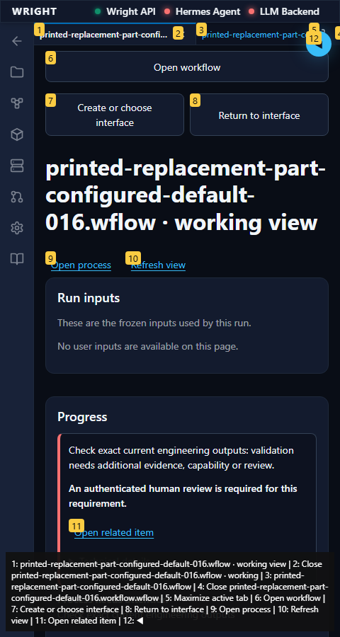
The preview remains a workspace tab, with the same results and accessible Files navigation.
Expected: Read-only preview of the same UI revision/run and exact results; navigation return works.
Actual: Backend read-only binding and 20 exact results verified; preview has the available width and Files returns focus.
raw 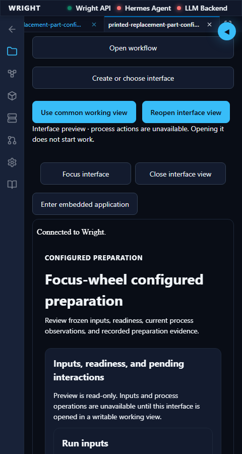
annotated 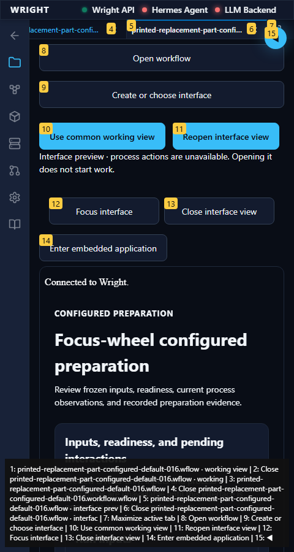
The retained creation record can be inspected while new creation is unavailable.
Expected: Saved progress; diagnostics collapsed; new creation disabled with unavailable compiler/model.
Actual: The actual saved job loads, Creation details is collapsed, and Create interface is disabled.
annotated 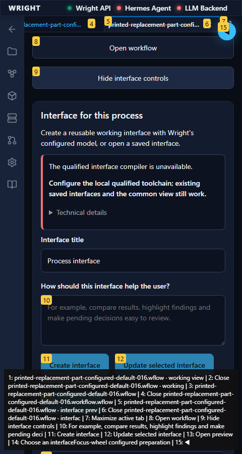
Expanded diagnostics identify the retained generation request and trace.
Expected: The original request, job, revision and trace, with no new generation or run.
Actual: All four identities match the retained actual-model authoring record; scoped WCAG scan reports zero violations.
annotated 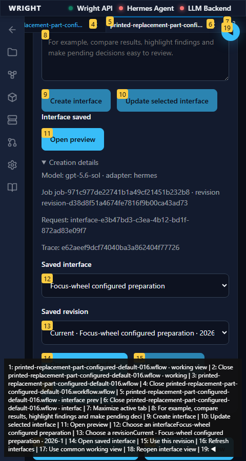
The normal workspace entry did not meet the expected state.
Expected: Workspace and established editor available.
Actual: expect(locator).toBeVisible() failed Locator: locator('[data-testid="workspace-process-view"]:visible').getByTestId('surface-panel-host').locator('iframe').contentFrame().getByText('Preview - process controls are read-only.', { exact: true }) Expected: visible Timeout: 90000ms Error: element(s) not found Call log: - Expect "to.be.visible" with timeout 90000ms - waiting for locator('[data-testid="workspace-process-view"]:visible').getByTestId('surface-panel-host').locator('iframe').contentFrame().getByText('Preview - process controls are read-only.', { exact: true })
annotated 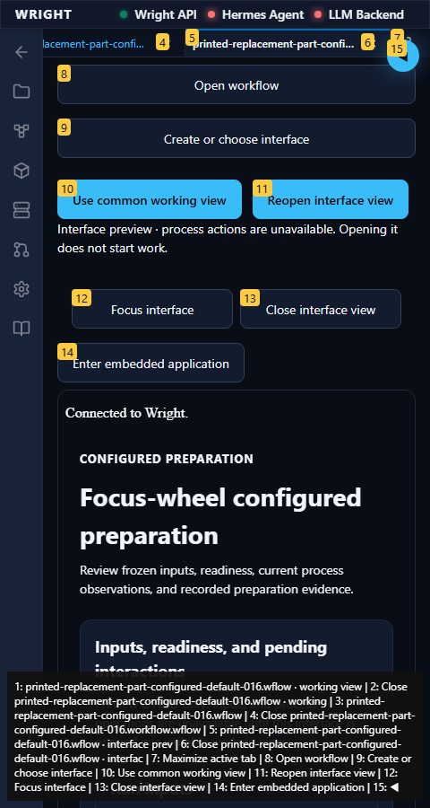